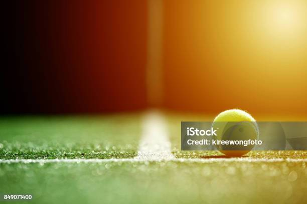
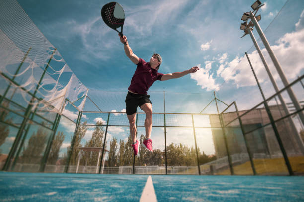
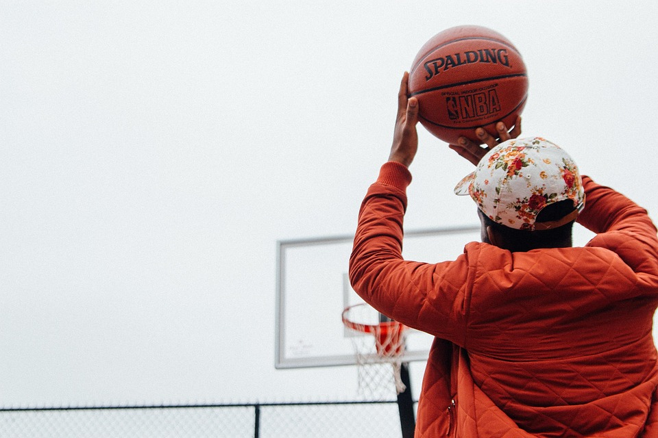

El tenis es un deporte jugado en todo el mundo muy sencillo en el que se juega en una pista rectangular muy grande con dos raquetas y pelotas de tenis.Varios de los tenistas mas famosos en España son Carlos Alcaraz y Rafael Nadal.A mi es un deporte que me gusta mucho ya que es muy sencillo y divertido de jugar con amigos
El padel es un deporte muy parecido al tenis ya que se utiliza una raqueta (un poco mas grande y gruesa) y una parecida pista que es mas pequeña.Es mucho mas divertido que el tenis para mi porque al jugar en una pista cerrada las partidas son mas rapidas.
El baloncesto es un deporte al que no he estado apuntado ni he jugado o practicado en solitario pero lo juego con mis amigos ya que a ellos les encanta este deporte a mi me gusta pero no mas que los dos anteriores.Es un deporte muy sencillo ya que se juega con un equipo y con un balon.El objetivo es encestar la pelota en una canasta el maximo numero de veces posible.
